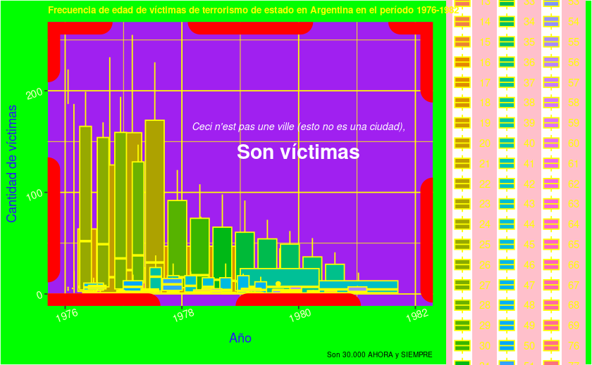
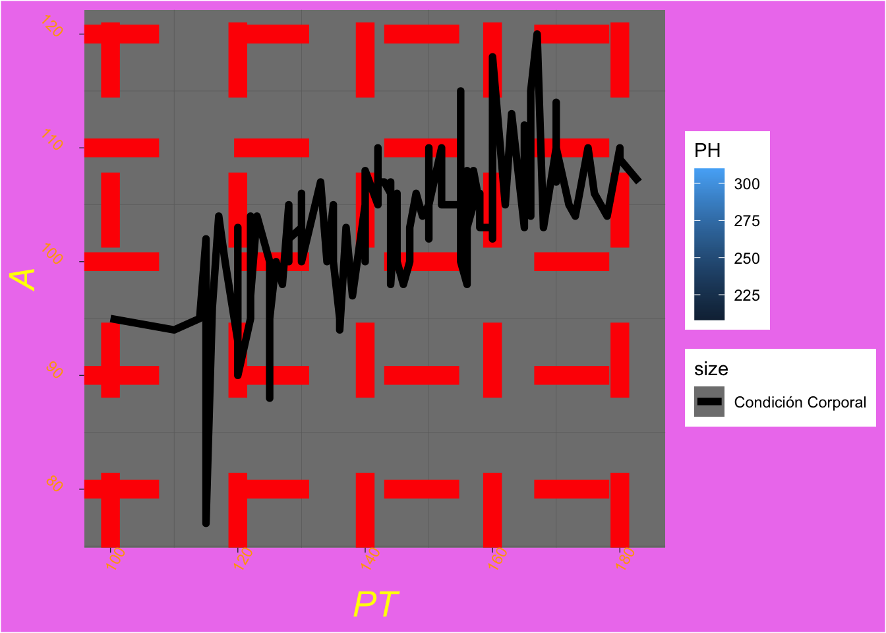
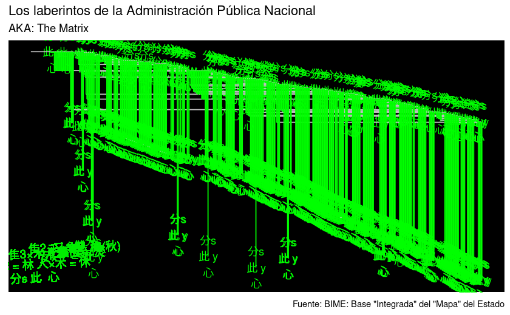
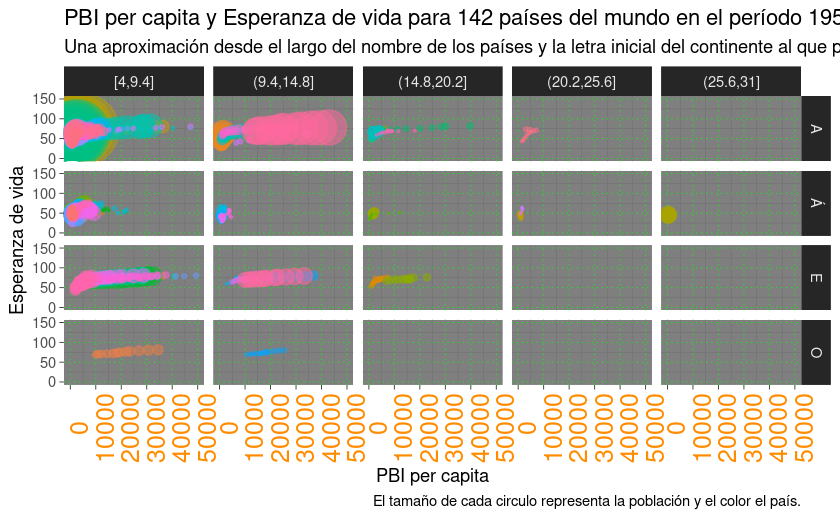
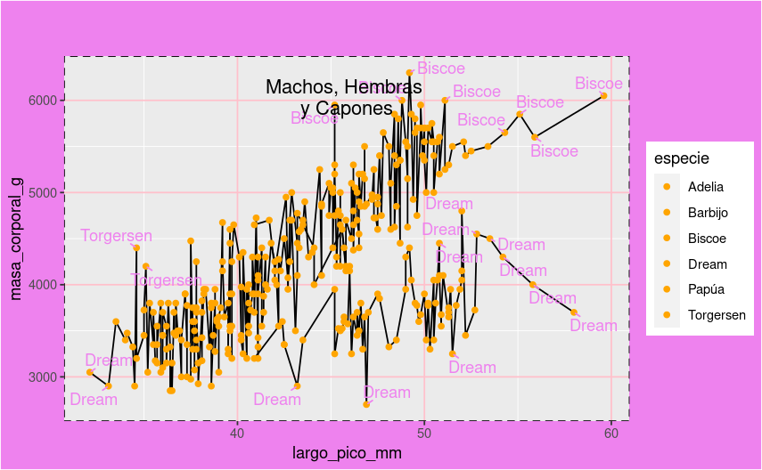
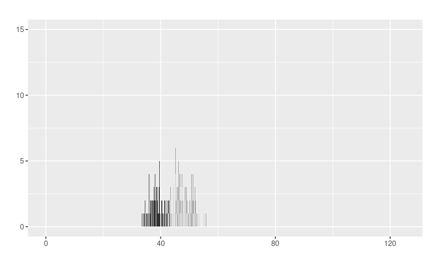
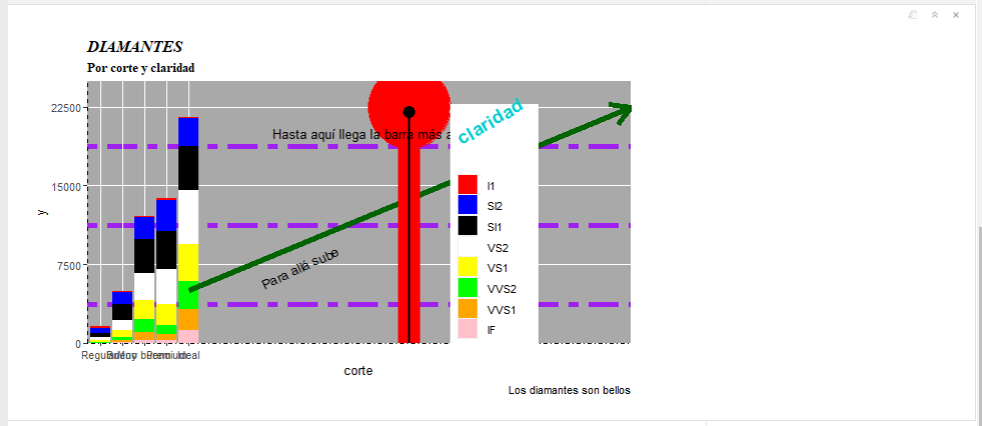
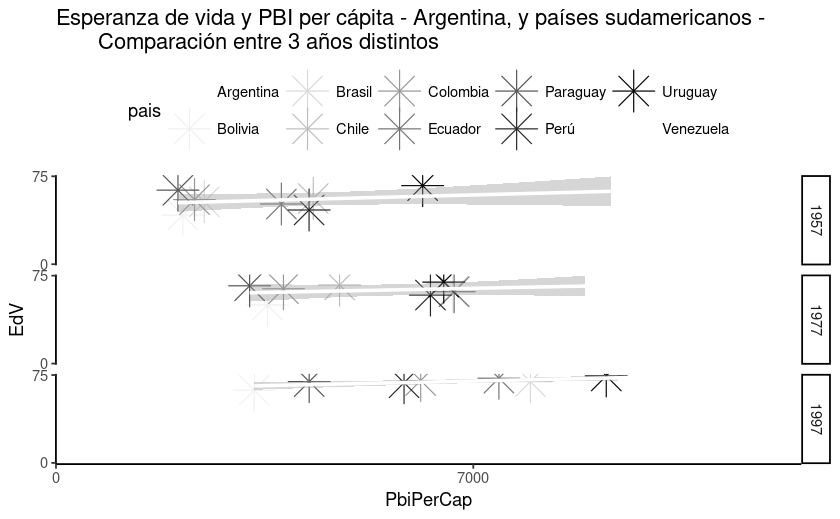
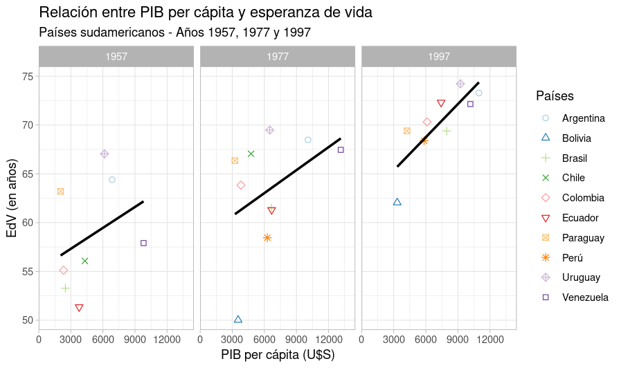

Trabajos finales utilizando Tableau o RMarkdown y ggplot2.
Los gráficos están listados por orden alfabético
library(presentes)
library(tidyverse)
library(lubridate)
victimas_parque <- select(parque_de_la_memoria, id, edad, fecha_de_secuestro, ano_en_monumento, lugar_de_secuestro, ocupaciones, sexo, militancia)
edad_victimas <- victimas_parque %>%
group_by(fecha_de_secuestro) %>%
mutate(fecha = dmy(fecha_de_secuestro)) %>%
mutate(anio = year(fecha)) %>%
group_by(edad, anio) %>%
filter(anio %in% c(1976:1982)) %>%
summarise(victimas_por_anio = n()) %>%
arrange(desc(victimas_por_anio))
ggplot(edad_victimas,aes(anio, victimas_por_anio)) +
geom_boxplot(aes(fill = edad), color = "yellow", position = "dodge") +
scale_x_continuous(limits = c(1976, 1982)) +
labs(
title = "Frecuencia de edad de víctimas de terrorismo de estado en Argentina en el período 1976-1982",
caption = "Son 30.000 AHORA y SIEMPRE",
x = "Año",
y = "Cantidad de víctimas",
fill = "Edad") +
annotate("text", x = 1980, y = 165, color = "white", fontface = "italic", size = 3,
label = "Ceci n'est pas une ville (esto no es una ciudad),") +
annotate("text", x = 1980, y = 140, color = "white", fontface = "bold", size = 6,
label = "Son víctimas") +
theme_bw() +
theme(panel.grid = element_line(color = "yellow"),
panel.background = element_rect(fill = "purple"),
panel.border = element_rect(linetype = "dashed", color = "red", size = 10) ,
legend.background = element_rect(fill = "pink"),
legend.text = element_text(color = "yellow"),
plot.title = element_text(color = "yellow", size = 8, face = "bold"),
plot.caption = element_text(size = 6),
plot.background = element_rect(fill = "green"),
axis.title = element_text(color = "#2916F5"),
axis.text = element_text(angle = 20, color = "#FFFFCC")) 
library(tidyverse)
library(readxl)
BD_Queta <- read_excel("BD_Queta.xlsx", sheet = "BD_VATI", skip = 4)
BD_VT <- select(BD_VALENTINA_TINTE, "PT", "PH", "A", "Condición Corporal")
ggplot(BD_VT,aes(x = PT, y = A)) +
geom_line(aes(color = PH)) +
geom_line(aes(size = "Condición Corporal")) +
theme_dark() +
theme(plot.title = element_text(size = 13, colour = "yellow", face = "italic"), plot.subtitle = element_text(size = 1, colour = "yellow", face = "italic"), plot.background = element_rect (fill = "violet"), plot.caption = element_text(size=9, color = "white")) +
theme(panel.grid.major = element_line(color = "red", size = 5, linetype = "dashed"))+
theme(axis.title = element_text(colour = "yellow", face = "italic", size = 20))+
theme(axis.text.x = element_text(colour= "orange", angle = 60,))+
library(readr)
library(igraph)
library(tidygraph)
library(igraphdata)
library(ggraph)
BIME <- read_csv("BIME_estructura_autoridades_apn_20221116.csv")
Mapa <- BIME |>
rename("from" = reporta_a,
"to" = unidad)
Mapa |>
head(500) |>
ggraph(layout = 'fabric') +
geom_node_text(aes(label = "分s\n此 y\n心"), color = "green") +
geom_node_range(colour = 'grey') +
geom_edge_span(colour = 'green', end_shape = 'triangle') +
geom_text(x = 5, y = 5, label = "分s 此 心",
size=4, angle= 3,col="green2") +
geom_text(x = 12, y = 30, label = "木2 = 林 人×木 = 休",
size=4, angle= 3,col="green2") +
geom_text(x = 20, y = 50, label = "隹3×木 = 雧(集)",
size=4, angle= 3,col="green2") +
geom_text(x = 30, y = 60, label = "隹2×又= 雙",
size=4, angle= 3,col="green2") +
geom_text(x = 40, y = 44, label = "女×子 = 好",
size=4, angle= 3,col="green2") +
geom_text(x = 50, y = 50, label = "木2×火 = 焚",
size=4, angle= 3,col="green2") +
geom_text(x = 60, y = 60, label = "禾×龜 = 龝(秋)",
size=4, angle= 3,col="green2") +
labs(title="Los laberintos de la Administración Pública Nacional", subtitle="AKA: The Matrix", caption= 'Fuente: BIME: Base "Integrada" del "Mapa" del Estado') +
theme(panel.background = element_rect(fill = "black"))
library(tidyverse)
library(stringi)
paises <- datos::paises
paises <- mutate(paises, largo_nomb_pais = str_length(pais),
prime_letra_conti = substr(continente, 1,1))
paises <- mutate(paises, largo_nomb_pais = cut_interval(largo_nomb_pais, n = 5))
ggplot(paises, aes(pib_per_capita, esperanza_de_vida))+
geom_point(aes(size = poblacion,
color = pais),
show.legend = FALSE,
alpha = 0.5)+
scale_size_area(max_size = 20,
guide = NULL)+
scale_y_continuous(limits = c(0, 150))+
scale_x_continuous(limits = c(0, 50000))+
facet_grid(prime_letra_conti~largo_nomb_pais)+
labs(title = "PBI per capita y Esperanza de vida para 142 países del mundo en el período 1952-2007",
subtitle = "Una aproximación desde el largo del nombre de los países y la letra inicial del continente al que pertenecen",
caption = "El tamaño de cada circulo representa la población y el color el país.",
x = "PBI per capita",
y = "Esperanza de vida",
color = "")+
theme_dark()+
theme(axis.text.x = element_text(size = 15,
angle = 90,
color = "darkorange"),
panel.grid.major = element_line(linetype = "dotted",
color = "green"),
)
library(tidyverse)
library(datos)
library(ggrepel)
ggplot(pinguinos, aes(largo_pico_mm, masa_corporal_g)) +
geom_line(aes(fill=especie)) +
geom_point(aes(fill=isla), color="orange") +
geom_text_repel(aes(label=ifelse((masa_corporal_g|largo_pico_mm),
as.character(isla))),min.segment.length = 0, seed = 25, color="violet")+
theme(panel.border = element_rect(linetype = "dashed", fill = "NA"))+
theme(panel.grid.major = element_line(colour = "pink"))+
theme(plot.background = element_rect(fill = "violet"))+
labs(title='Machos, Hembras \ny Capones')+
theme(plot.title=element_text(vjust=-15, hjust=0.5))
library(ggplot2)
library(datos)
pinguinos |>
ggplot(aes(largo_pico_mm)) +
geom_bar(aes(fill = especie), show.legend = FALSE) +
labs(
title = "",
x = "",
y = ""
) +
scale_y_continuous(limits = c(0, 15)) +
scale_x_continuous(limits = c(0, 125)) +
scale_fill_grey() 
library(tidyverse)
library(datos)
library(extrafont)
loadfonts(device = "win")
fonts() # no logré que funcionen las fonts pero si las familias de letras
ggplot(diamantes, aes(x = corte)) +
geom_bar(aes(fill = claridad)) +
scale_x_discrete() +
scale_y_continuous(limits = c(0, 25000), breaks = seq(0, 25000, 7500), expand = c(0, 1))+
scale_fill_manual(values = c("red","blue", "black", "white", "yellow", "green", "orange", "pink"))+
labs( title = "DIAMANTES", subtitle = "Por corte y claridad", caption = "Los diamantes son bellos") +
annotate("text", x = 10, y = 7300, angle = 25, label = "Para allá sube") +
annotate("segment", x = 5, xend = 25, y = 5000, yend = 22500, color = "darkgreen", arrow = arrow(), size = 2) +
annotate("pointrange", x = 15, y = 22500, ymin = 0, ymax = 22500, colour = "red", size = 8) +
annotate("pointrange", x = 15, y = 22000, ymin = 0, ymax = 22500, colour = "black", size = 1) +
annotate("text", x = 13.2, y = 20000, angle = 0, label = "Hasta aquí llega la barra más alta") +
theme(panel.grid.minor = element_line(color = "purple", linetype = "twodash", size = 2),
panel.background = element_rect(fill = "darkgray"),
legend.position = c(.75,.45),
legend.title = element_text(color = "darkturquoise", size = 16, face = "bold", angle = 30),
plot.title = element_text(face = "bold.italic", family = "serif"),
plot.subtitle = element_text(face = "bold", family = "serif"),
axis.line.y = element_line(linetype = 8),
axis.line.x = element_line(linetype = 4),
plot.margin = margin(5, 5, 5, 5, "mm")
)
library(tidyverse)
library(datos)
paises1 <- paises %>%
filter(anio %in% c('1957', '1977', '1997')) %>%
filter(continente %in% c('Américas')) %>%
filter(pais %in% c('Argentina', 'Bolivia', 'Brasil', 'Chile', 'Colombia', 'Ecuador', 'Paraguay', 'Perú', 'Uruguay', 'Venezuela')) %>%
group_by(pais, continente, poblacion, esperanza_de_vida, pib_per_capita)
# Gráfico versión fea
ggplot(paises1, aes(x = pib_per_capita, y = esperanza_de_vida)) +
geom_point(aes(color = pais), size = 8, shape = 8) +
geom_smooth(method = "lm", color = "white") +
scale_x_continuous(limits = c(0, 12500), breaks = seq(0, 12500, 7000), expand = c(0, 1)) +
scale_y_continuous(limits = c(0, 75), breaks = seq(0, 75, 75), expand = c(0, 1)) +
scale_color_brewer(palette = "Greys") +
labs(title="Esperanza de vida y PBI per cápita - Argentina, y países sudamericanos -
Comparación entre 3 años distintos",
x = "PbiPerCap",
y = "EdV") +
facet_grid("anio") +
theme_classic() +
theme(legend.position = "top")
# Intento de gráfico bien hecho
ggplot(paises1, aes(x = pib_per_capita, y = esperanza_de_vida)) +
geom_point(aes(color = pais, shape = pais), size = 2) +
geom_smooth(method = "lm", se = FALSE, color = "black") +
scale_x_continuous(limits = c(0, 14500), breaks = seq(0, 15500, 3000), expand = c(0, 1)) +
scale_y_continuous(limits = c(50, 75), breaks = seq(0, 75, 5), expand = c(0, 1)) +
scale_color_brewer(palette = "Paired") +
scale_shape_manual(values = c(1:9, 22)) +
labs(title = "Relación entre PIB per cápita y esperanza de vida", subtitle = "Países sudamericanos - Años 1957, 1977 y 1997",
fontface = "bold",
x = "PIB per cápita (U$S)",
y = "EdV (en años)",
size = 3,
color = "Países",
shape = "Países",
size = 4) +
facet_wrap("anio") +
theme_light()+
theme(legend.position = "right",
legend.background = element_rect(fill = "white", color = NA))